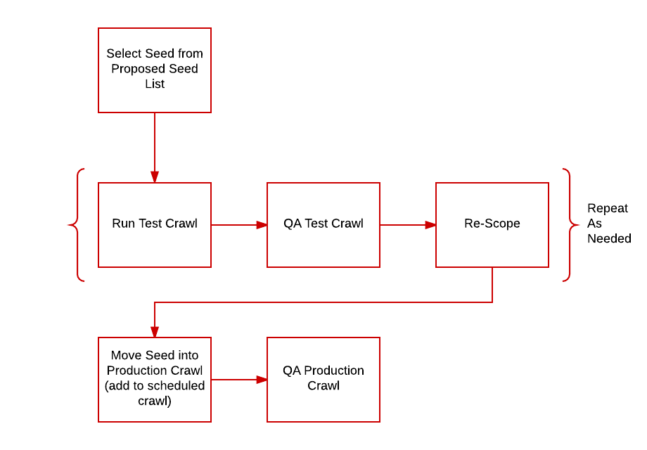

Seed Management
Perhaps the most important part of maintaining our web archive is seed management. Seed management is the act of selecting, scoping, scheduling, crawling and maintaining all of the seeds in our collections. While it is not intended to be an exhaustive list of subjects related to seed management, this page should guide you through the process of selecting a seed and prepping it for regular scheduled crawls and ongoing maintenance.
Seed Management Workflow

Seed Selection
Seed selection is an ongoing process for all of our collections. Generally seeds are selected by curators. Suggested seeds are then added to our Up To Date Web Archiving Seeds Google Sheet (login required). This sheet allows us to track all seeds from one central location, and to track the seeds that have been proposed from various curators and library staff. Once a proposed seed is selected for archiving the process of seed scoping begins.
Adding New Seeds to a Collection
After a new seed has been selected, it is time to add that seed to a collection in Archive-It. In order to add a seed to a collection you need to:
1) Open the Collection from the Archive-It homepage
2) Click on the Seeds tab
3) Click Add Seeds
4) Paste the full URL of the seed you wish to add (e.g. https://www.ncsu.edu/)
5) Set visibility to private
6) Keep frequency as one time crawl (this ensures it does not accidentally end up in a recurring crawl before scoping is complete)
7) Select seed type
8) Click Add Seeds